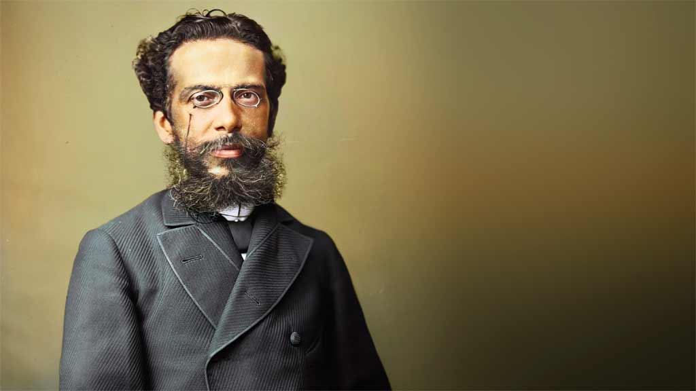

Joaquim Maria Machado de Assis (1839–1908) foi um renomado escritor brasileiro, considerado um dos maiores nomes da literatura em língua portuguesa. Nascido no Rio de Janeiro, ele superou a pobreza, a epilepsia e a origem humilde para se tornar um jornalista, contista, cronista, romancista, poeta e teatrólogo de sucesso. Machado de Assis foi o fundador da Academia Brasileira de Letras (ABL) e introduziu o Realismo no Brasil com a publicação de Memórias Póstumas de Brás Cubas em 1881.
